Animes que você precisa assistir!
Para quem começou a explorar o maravilhoso mundo dos animes (e mangás) há pouco tempo, fizemos uma lista com os melhores animes para você assistir
23. Food-Wars
Shokugeki no Soma conta a história de um garoto chamado Sōma Yukihira, cujo sonho é se tornar um chef em tempo integral no restaurante de seu pai e superar suas habilidades culinárias. Mas, assim que Sōma se gradua no Ensino Fundamental, seu pai, Jōichirō Yukihira, fecha o restaurante para cozinhar na América. No entanto, o espírito de luta de Sōma é reacendido por um desafio de Jōichirō: se graduar na Academia de Culinária Tōtsuki, uma escola de culinária de elite, onde menos de 1% dos estudantes se graduam, e onde qualquer disputa entre alunos pode ser decidida pelo resultado de duelos culinários chamados Shokugeki.
22. Tokyo-Revengers
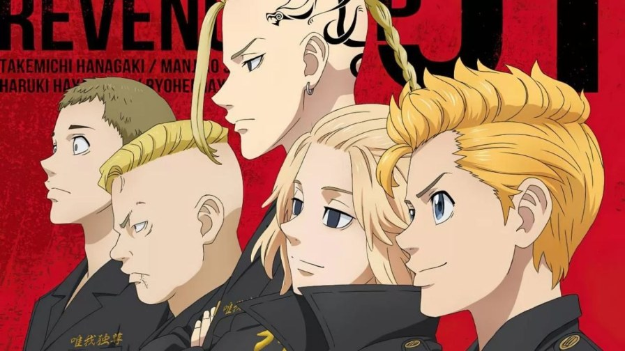
Embora recente, este anime já conquistou excelentes avaliações da crítica e dos fãs. A trama acompanha Takemichi Hanagaki, um jovem de 26 anos sem grandes expectativas de futuro. Sua vida dá uma reviravolta quando ele descobre que a gangue Tokyo Manji matou sua ex-namorada no colégio, Hinata Tachibana, e seu irmão mais novo Naoto. Pouco tempo depois, Takemichi é empurrado na frente de um trem, mas acaba conseguindo acidentalmente se transportar no tempo.
O jovem se depara em 2005, 12 anos no passado. Revivendo os anos de Ensino Médio, ele acaba revelando a Naoto sobre a morte de Hinata. A intervenção o leva de volta ao presente. Naoto não morreu e agora é um detetive. Mas Hinata ainda foi assassinada. O que vem a seguir é uma trama complexa, permeada de viagens no tempo para tentar corrigir e evitar os atos da Tokyo Manji. Mas é tudo muito maior do que Takemichi poderia imaginar. O anime pode ser visto no Crunchyroll.
21. The Promised neverland

Emma é uma órfã que vive em um orfanato chamado Grace Field House junto com seus outros irmãos adotivos. Dois deles são Norman e Ray, que, juntamente com a Emma, são os mais velhos e conseguem as pontuações mais altas em testes diários que eles têm que realizar.
20. Pokemon
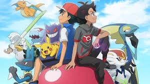Depois que ele completa 10 anos, Ash Ketchum (Satoshi no Japão) tem permissão para começar sua jornada no mundo dos Pokémon e sonha em se tornar um mestre Pokémon. No dia em que ele receberia seu primeiro Pokémon, Ash acorda em pânico, tendo dormido demais por assistir uma batalha de Pokemón. O Professor Carvalho, o pesquisador local de Pokémon, já doou os três Pokémon iniciais de Kanto (Bulbasaur, Charmander e Squirtle) a novos Treinadores Pokémon quando Ash finalmente chega atrasado ao Laboratório de Carvalho. O único Pokémon que ele deixou é um Pikachu, que ele dá para Ash. Determinado a fazer isso em sua jornada, Ash faz o melhor para fazer amizade com Pikachu, mas ele não confia nele e se recusa a voltar para a sua Pokébola, mesmo atacando Ash com seus poderes elétricos. É só depois que Ash protege Pikachu de um grupo de Spearow irritados que Pikachu percebe o quanto Ash se preocupa com ele, levando-o a salvar Ash. Depois, ambos veem um Pokémon misterioso e não identificável que estimula os dois a trabalharem para o objetivo de Ash.
19. Sword Art Online
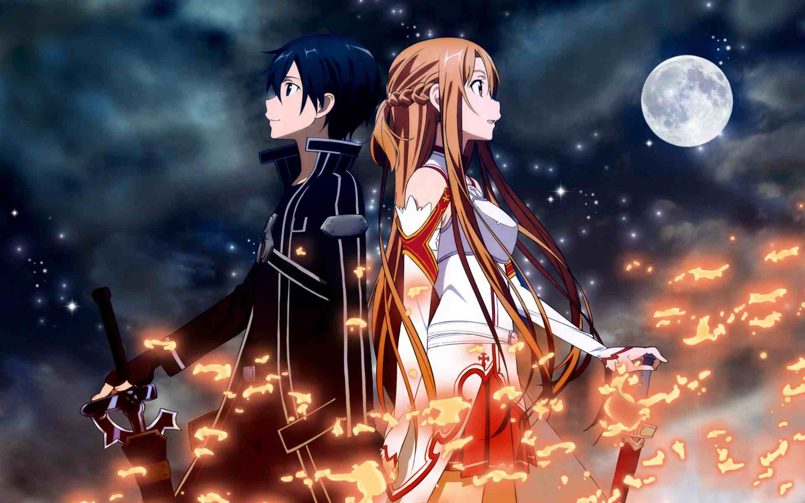
Um anime para quem é aficionado por games! Sword Art Online conta a história de um grupo de amigos que, num futuro distante, usam um equipamento chamado Nerve Gear para conseguir entrar num jogo de MMORPG.
Mas algo de muito errado acontece e os jovens ficam presos no game. Para sair, terão que enfrentar todos os desafios e chefões do jogo. Ah, e morrer não é uma opção, caso contrário os cérebros dos participantes serão literalmente derretidos!
O anime foi baseado no light novel que leva o mesmo título, e que também originou mangás, um filme, um OVA e vários jogos eletrônicos. No Brasil, você pode acompanhar Sword Art Online através do Crunchyroll.
18. Record of Ragnarok
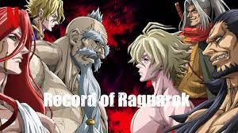
O duelo final entre deuses e humanos teve início, e pode ser a única esperança de salvação da humanidade. Após 7 milhões de anos de história humana, o Conselho dos Deuses decidiram que os humanos deveriam ser extintos. Na tentativa de salvar a humanidade, a valquíria Brunhilde propõe dar a eles uma última chance, com a batalha de Ragnarok. No moRtal duelo, 13 humanos deverão enfrentar 13 deuses, e obter 7 vitórias na competição.
Mas não estamos falando de quaisquer humanos e deuses. São escolhidos 13 humanos notáveis de diferentes períodos da história da humanidade. Nomes como Adão, Jack o Estripador, Buddha, Nikola Tesla, Grigori Rasputin e Leonidas I se juntam a imperadores japoneses e chineses e outros escolhidos para a batalha. Para a luta ser mais justa, cada um deles contará com a ajuda de uma valquíria, que se transforma em uma arma sob medida para seu usuário, mas corre risco de morrer caso seu portador morra.
17. One-Punch Man
Este é outro anime que (inesperadamente) ganhou um grande hype e não pode passar batido entre os fãs shonen que curtem boas cenas de pancadaria. A nota da série no IMDb, inclusive, é um belo 8,8. One-Punch Man conta a história de Saitama, um jovem que inicia um intenso treinamento com o objetivo de se tornar o super-herói mais forte do mundo... e consegue!
Capaz de derrotar os seus inimigos com apenas um único soco, este herói careca, com uniforme amarelo e que usa luvas de borracha (sexy, hein?), cativou o público com o seu humor e "jeitão" que beira o ridículo. One-Punch Man é um show de clichês das tradicionais narrativas shonen, mas que já conquistou o coração de uma legião de otakus. Para entender o motivo, você terá que assistir e se "contaminar" com esta febre! Ah, a dublagem brasileira é sensacional!
16. One Piece
Em exibição desde 1999, One Piece é um dos animes mais longos de todos os tempos! Ainda assim, segue conquistando novas gerações e mantém sua nota 8,7 no IMDb. Criado por Eiichiro Oda, a animação foi baseada no mangá de mesmo nome, lançado originalmente em 1997. A trama da história se foca no pirata Monkey D. Luffy e seu grupo, os "Piratas do Chapéu de Palha". O objetivo do jovem é bem "simples": encontrar o tesouro One Piece e se tornar o Rei dos Piratas.
A mitologia de One Piece é recheada de diferentes raças, como sereianos, anões, gigantes, entre outras criaturas bizarras que habitam os vários mares descritos no anime. Além disso, frutas misteriosas dão super poderes àqueles que as consomem, como foi o caso do protagonista.
Assim como todos os shounen (ou a maioria deles), One Piece mostra o crescimento e fortalecimento do protagonista, enquanto enfrenta diversos arcos com adversários super fortes. Para quem é fã desse gênero de anime, One Piece definitivamente deve estar no seu "currículo".
15. Naruto
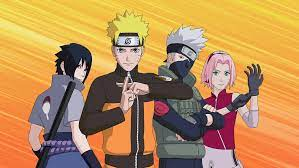
De acordo com as informações liberadas pelo Crunchyroll em março de 2020, Naruto Shippuden foi o anime mais visto na plataforma na última década! Segundo os dados do streaming, o anime liderou as visualizações em regiões como América Central, América do Norte, Oriente Médio, Ásia e em países como Eslovênia, Suíça, Espanha e - não poderia faltar - no Brasil. Não à toa, a série conta com uma nota 8,6 no IMDb.
A trama de Naruto Shippuden dá continuidade à história que conhecemos em Naruto. Seguimos acompanhando as aventuras do jovem ninja, em seu caminho para alcançar o objetivo de se tornar o próximo Hokage, líder máximo da vila em que vive. Nesse contexto, vemos mais dos treinos e missões de Naruto e dos outros ninjas em formação, que desenvolvem cada vez mais seus poderes. As batalhas de tirar o fôlego renderam ao anime audiência em seus 500 episódios, além de filmes, OVAs, jogos e outros produtos. Naruto Shippuden pode ser visto completo no Crunchyroll.
14. The Seven Deadly Sins
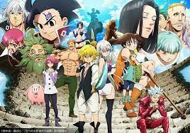O “Sete Pecados Capitais” (“The Seven Deadly Sins”) era o mais forte grupo de cavaleiros que defendia a região de Britannia. Há dez anos eles foram acusados de tentar dar um golpe para tomar o reino e teriam sido impedidos pelos Paladinos, guerreiros sagrados poderosíssimos do reino de Lyonesse, e fugido.
13. Boku No Hero Academia
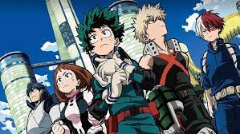
A popularidade de Boku No Hero Academia segue tão forte (senão ainda mais forte) quanto quando o anime foi lançado em 2016. Misturando histórias de superação, super poderes, o ambiente estudantil, muitas cenas de lutas incríveis e tons de comédia, o anime caiu nas graças do público, motivo pelo qual conquistou um 8,5 no IMDb.
A trama acompanha Izuku Midoriya, um jovem que, em um mundo onde todos nascem com um super poder - ou uma individualidade - nasceu sem nenhum. Ainda assim, Izuku - ou Deku, como é mais conhecido - sonha em estudar na escola para super heróis para se tornar um. Quando Deku arrisca sua vida, mesmo sem ter poderes, para ajudar o poderoso herói All Mighty, este, que é considerado o maior herói do mundo, compartilha com o garoto parte de seus poderes.
O anime foi muito bem recebido pela crítica e pelos espectadores. No Brasil, pode ser visto no Crunchyroll.
12. Kuroko no Basket
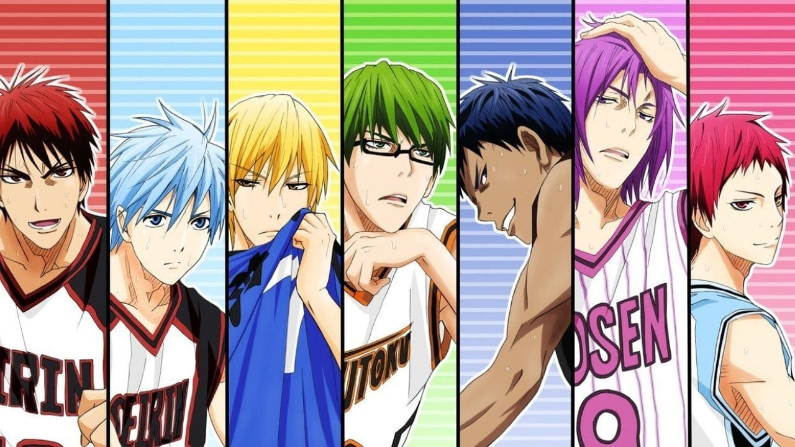
Kuroko no Basket acompanha as aventuras de Tetsuya Kuroko, um jovem de 16 anos que, sob a aparência normal, esconde um formidável jogador de basquete.
Ele costumava estudar no Colégio Teiko, cujo time fez história em quadra ao ganhar três temporadas consecutivas, recebendo o apelido de "Geração dos Milagres"./p>
11. kakegurui
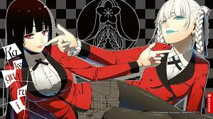
Este anime trouxe uma escola de elite bem diferente das que já vimos em tramas do gênero. A Academia Privada Hyakkaou recebe em suas salas de aula os filhos de poderosos milionários japoneses. Contudo, não é sua fortuna, seu desempenho esportivo ou acadêmico que estipulam sua popularidade e seu sucesso na instituição. Tudo isso, e até seu futuro depois da escola, depende de um esquema de apostas.
Uma dinâmica de jogos de apostas exige que os alunos mandem contribuições monetárias ao conselho estudantil. A partir de suas vitórias no jogo, eles podem ganhar conexões e popularidade que podem ajudá-los em sua vida profissional futura.
Aqueles que perdem, contudo, criam dívidas e se tornam espécies de escravos, que são tratados como animais, com uma coleira em volta do pescoço os identificando. Além disso, caso não consigam pagar suas dívidas até a formatura, eles recebem um "Cronograma de Vida", que acaba ditando seu futuro para que paguem o que devem.
10. jujutsu-kaisen

Yuuji Itadori é um estudante do ensino médio que vive em Sendai com seu avô. Ele evita regularmente a equipe de pista devido à sua aversão ao atletismo, apesar de seu talento inato para o esporte.
09. JoJo's Bizarre Adventure
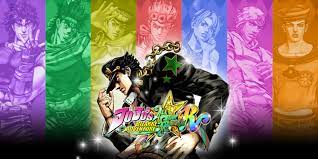
Um dos animes mais vistos pelo mundo (segundo uma pesquisa do streaming Crunchyroll, de 2020), JoJo's Bizarre Adventure traz a incrível trajetória da família Joestar. Cada temporada é protagonizada por um membro da família cujo nome acaba se abreviando em "JoJo". Assim, acompanhamos JoJos de diferentes gerações, lutando contra forças sobrenaturais malignas.
Até o momento, a série de mangás nos apresentou a Jonathan Joestar, Joseph Joestar, Jotaro Kujo, Josuke Higashikata, Giorno Giovanna e Jolyne Kujo. Todos viveram aventuras de tirar o fôlego, em meio a um visual e um traço diferente, extravagante e que conquistou os fãs. E essa estética fantástica ganhou vida no anime junto a uma trilha sonora que os fãs de rock n' roll vão curtir bastante, o que fez a produção se tornar um marco na cultura pop.
08. Hunter x Hunter
Hunter x Hunter é outro título imperdível e uma ótima dica para quem quer mergulhar no mundo dos animes. Com roteiro de Tsutomu Kamishiro, esta animação está dividida em duas séries: a primeira lançada entre 1999 e 2001, e a segunda entre 2011 e 2014. Vamos falar aqui sobre a segunda versão do anime, considerada a mais completa, uma vez que traz a adaptação de todos os arcos vistos no mangá. Um clássico atemporal, Hunter x Hunter (2011) tem a excelente nota 8,9 no IMDb.
O universo criado por Yoshihiro Togashi é muito rico, com um sistema de magia único (através do uso do Nen, que é a energia da própria aura, basicamente) e com uma mitologia bastante característica. Cada arco de Hunter x Hunter é como se fosse um anime a parte, com temáticas diferentes e inclusão de personagens exclusivos.
Mesmo que o espectador ainda esteja acompanhando a trajetória de Gon Freecss, o protagonista, e seus amigos em busca de descobrir o que é ser um Hunter, o enredo não é inteiramente fechado nesse núcleo. Além disso, a trama dá abertura para a discussão de temas polêmicos e reflexivos sobre a humanidade, como o preconceito, a desigualdade, a pobreza, a família, entre outros.
A animação está a cargo da Madhouse, conhecida por ter produzido Death Note e One-Punch Man. Isso significa que podemos esperar belíssimas sequências de cenas de ação, fluídas e muito bem feitas!
07. Fullmetal Alchemist
Segundo anime inspirado no mangá Fullmetal Alchemist, esta é a versão mais fiel à espetacular história contada nos quadrinhos. Edward e Alphonse Elric são dois jovens alquimistas. Quando ainda eram crianças, eles tentaram usar alquimia para trazer sua mãe de volta à vida. Como consequência da tentativa mal sucedida, Ed acabou perdendo um braço e uma perna, já Al precisou que sua alma fosse armazenada em uma armadura para que ele sobrevivesse.
Para reverter a situação, os dois procuram pela Pedra Filosofal, artefato que permite o rompimento da regra de troca equivalente da alquimia. Enquanto peregrinam por Amestris, seu país, os dois acabam descobrindo uma conspiração capaz de abalar todo o seu mundo. De tirar o fôlego, Fullmetal Alchemist: Brotherhood é daqueles animes que deixam saudade quando terminam e que você, com certeza, irá querer ver mais de uma vez. O anime recebeu a incrível nota 9,1 no IMDb. Está disponível na Netflix Brasil.
06. Fairy Tail
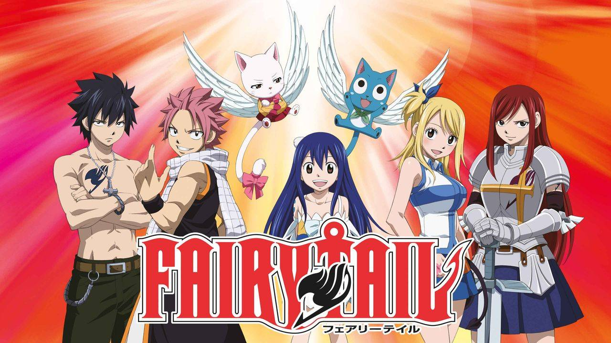
Fairy Tail acompanha os jovens magos Lucy Heartfilia e Natsu Dragneel. Ela tem o sonho de se tornar escritora. Ele é um membro da guilda de feiticeiros que tem como objetivo encontrar o dragão Igneel. Os dois acabam se cruzando quando Lucy se vê obrigada a entrar na guilda para ganhar dinheiro e aprimorar suas habilidades.
Publicado pela primeira vez em 2006 no Japão, e em 2010 no Brasil, o mangá de Fairy Tail alcançou o incrível número de 72 milhões de cópias vendidas em abril de 2020. O anime pode ser visto no Crunchyroll.
05. Dragon Ball
Com roteiro de Akira Toriyama, Dragon Ball Super é uma rajada de ar fresco para os fãs de DBZ que se decepcionaram totalmente com o fracasso de Dragon Ball GT. O anime, inclusive, conquistou uma nota 8,4 no IMDb. Esta nova série se passa poucos meses após o fim dos eventos de Dragon Ball Z, quando Goku derrota Majin Boo e restaura a paz na Terra... Mas não por muito tempo!
Dragon Ball Super apresenta novas e poderosas ameaças aos Guerreiros Z, como Bills, O Deus da Destruição, além de outros poderosos deuses que tentam destruir o nosso planeta, no melhor estilo Torneio de Artes Marciais. Também reencontramos antigos vilões, como um Freeza renascido e sedento por vingança!
04. Kimetsu no Yaiba
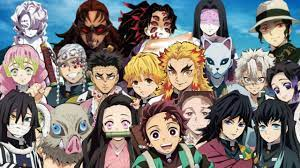
O jovem Tanjirō Kamado perdeu praticamente toda a sua família após um ataque demônios em sua vila. Apenas uma de suas irmãs, Nezuko, sobreviveu. Infelizmente, a menina foi transformada em um demônio, contudo conseguiu manter suas emoções e pensamentos humanos.
Para vingar sua família e evitar que outras pessoas tenham o mesmo terrível destino, Tanjirō decide se tornar um caçador de demônios. Levando sua irmã consigo, ele se une a um grupo de caçadores, com diferentes poderes e trágicos passados, com o objetivo de destruir o Rei dos Demônios, líder dos oponentes e responsável por suas transformações.
Lançado no Japão em 2016, o mangá de Kimetsu no Yaiba alcançou a incrível marca de 25 milhões de cópias em circulação. No IMDb, o anime segue com um excelente 8,8. Misturando drama, comédia e cenas de luta (com muito sangue) de tirar o fôlego, Demon Slayer foi uma boa novidade de 2019 para o universo dos animes.
03. Death Note

O que você faria se fosse dono de um caderno capaz de matar todos os seus inimigos? Esta é a arma que Light Yagami, um estudante do ensino médio, usa para "combater o mal". O jovem descobre o Death Note e passa a escrever o nome de todos os criminosos da cidade, com a missão de torná-la mais pacifica. Mas os planos de Light acabam por ser interrompidos por L., um detetive particular que se tornou um dos personagens mais icônicos desta série, além doRyuk (o "deus da morte"), obviamente.
Em agosto de 2017, a Netflix apresentou a adaptação americana de Death Note, com direção de Adam Wingard, Nat Wolff como Light Yagami, Keith Stanfield como L., e Willem Dafoe como Ryuk. MAs o filme não foi lá muito bem recebido pelos fãs do anime. Enquanto o anime detém a incrível nota 9,0 no IMDb, o filme não passou do 4,5.
02. Bleach
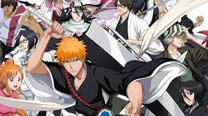
Clássico que até hoje conquista novas gerações de fãs, Bleach com certeza foi um marco na história das produções do gênero. O anime acompanha o jovem Ichigo Kurosaki, um estudante que sempre teve a inexplicável habilidade de fazer contato com espíritos. Mas sua vida dá uma reviravolta quando ele se depara com uma shinigami (Ceifeiro de almas) em meio a uma batalha com uma entidade maligna chamada Hollow.
Quando Ichigo tenta ajudar,a shinigami acaba transferindo seus poderes para ele. A partir daí, os episódios narram aventuras inimagináveis do novo shinigami na batalha contra os Hollow, no conflito com a Soul Society e muito mais.
01. Attack on Titan
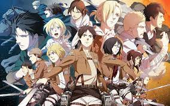
Com nota 8,8 no IMDb, sem dúvida, este é um dos animes mais aclamados dos últimos tempos! Baseado no mangá shonen criado por Hajime Isayama, Attack on Titan conta a história de um mundo devastado pelo ataque de gigantes que devoraram grande parte da população da Terra. Um grupo de sobreviventes vive isolado no interior de uma grande muralha. Com a paz do local ameaçada, Eren Jaeger, um jovem com "habilidades especiais", reúne um exército com a missão de destruir as aterrorizantes criaturas. Mas as descobertas no caminho são de tirar o fôlego do espectador.
Atenção, este não é um anime para quem tem "estômago fraco"! Cenas com decapitações e pessoas sendo desmembradas pelos titãs estão em quase todos os episódios. Mas, Attack of Titan não traz violência gratuita, como muita gente deve imaginar. O sangue não é o destaque deste anime, mas apenas um artifício para mostrar como a vida humana pode ser frágil...
Além do anime, Attack of Titan ainda tem 8 OVA's, dois filmes baseados na primeira temporada do anime, dois filmes live-action baseados no mangá, jogos eletrônicos, spin-offs de light novels e, claro, o mangá. Ufa!